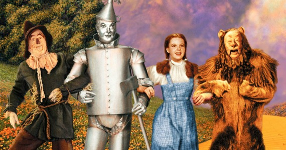

There's No Place Like Home
On her way down the yellow brick road, Dorothy attends a banquet held by a Munchkin man named Boq. The next day, Dorothy frees the Scarecrow from the pole on which he is hanging, applies oil from a can to the rusted connections of the Tin Woodman, and meets the Cowardly Lion. The Scarecrow wants a brain, the Tin Woodman wants a heart, and the Cowardly Lion wants courage, so Dorothy encourages the three of them to journey with her and Toto to the Emerald City to ask for help from the Wizard. After several adventures, the travelers enter the gates of the Emerald City and meet the Guardian of the Gates, who asks them to wear green tinted spectacles to keep their eyes from being blinded by the city's brilliance. Each one is called to see the Wizard. The Wizard appears to Dorothy as a giant head on a marble throne, to the Scarecrow as a lovely lady in silk gauze, to the Tin Woodman as a terrible beast, and to the Cowardly Lion as a ball of fire. The Wizard agrees to help them all if they kill the Wicked Witch of the West, who rules over Oz's Winkie Country. The Guardian warns them that no one has ever managed to defeat the witch.